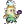

| - | Character | Speed | - | - | Score | - |
|---|---|---|---|---|---|---|
| Aria | 32:22.60 | 1843rd | 5778 | 234th | ||
| Bard | 23:04.43 | 4094th | 15950 | 228th | ||
| Bolt | - | - | 192 | 4122nd | ||
| Cadence | - | - | - | - | ||
| Diamond | 26:20.72 | 3065th | 8447 | 212th | ||
| Dorian | 40:46.86 | 2521st | 2969 | 767th | ||
|  | Dove | - | - | - | - | |
| Eli | 41:46.75 | 4268th | 5516 | 132nd | ||
| Mary | 36:32.21 | 1804th | 5603 | 108th | ||
| Melody | - | - | 6563 | 642nd | ||
| Monk | 34:54.77 | 1962nd | 9173 | 55th | ||
| Nocturna | - | - | 8058 | 3465th | ||
| Tempo | 13:15.85 | 1500th | 4689 | 908th | ||
| Coda | - | - | - | - | ||
| Story | - | - | 19956 | 137th | ||
| 9char | - | - | 15972 | 278th | ||
| 13char | - | - | 2510 | 504th |
| Speed | Aria | Bard | Bolt | Cad | Dia | Dor | Dove | Eli | Mary | Mel | Monk | Noc | Tempo | Coda |
|---|---|---|---|---|---|---|---|---|---|---|---|---|---|---|
| Hard | - | 45:12.71832nd | - | - | - | - | - | - | - | - | - | 38:01.192579th | - | - |
| NR | - | - | - | - | - | - | - | - | - | - | - | - | - | - |
| Rando | - | 21:06.35514th | - | - | 36:27.13307th | - | - | - | - | - | - | - | - | - |
| Phasing | - | - | - | 41:41.371478th | - | - | - | - | - | - | - | - | - | - |
| Mystery | - | 35:59.351096th | - | - | - | - | - | - | - | - | - | - | - | - |
| Score | ||||||||||||||
| Hard | 208202nd | 7274170th | - | - | - | - | - | - | 153114th | 1862357th | - | 7097491st | 2103120th | - |
| NR | 587th | 1201416th | - | 854643rd | - | - | - | - | - | - | - | - | - | - |
| Rando | - | 11848112th | - | - | 1079318th | - | - | - | 329119th | - | 16114th | 31071888th | - | - |
| Phasing | - | 343856th | - | 3858727th | - | - | 32229th | - | - | - | - | - | 98215th | - |
| Mystery | - | 618677th | - | - | 2560120th | - | - | - | - | - | 327th | 3801465th | - | - |
| Deathless | - | 2-3-3199th | - | 8-3-3479th | - | - | - | - | - | - | - | 0-4-4317th | - | - |
Last Updated:2022/04/30 05:14